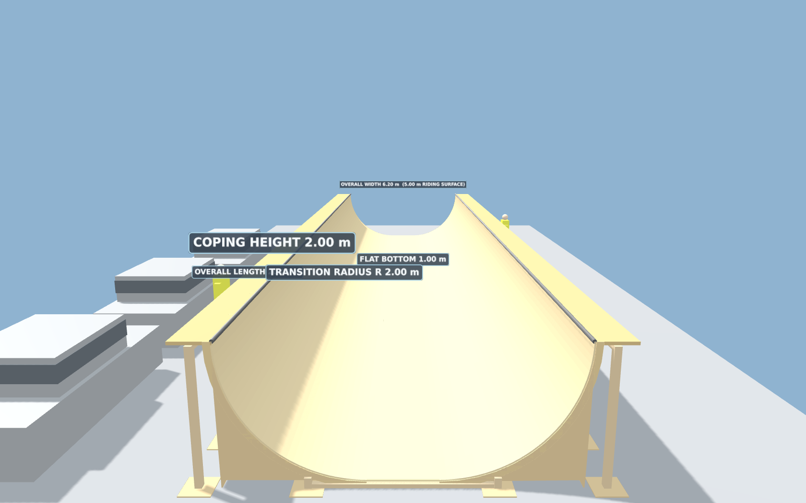
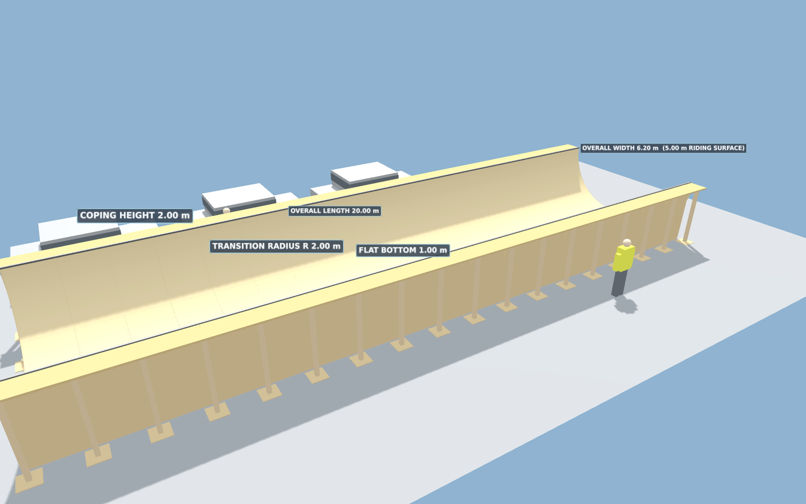
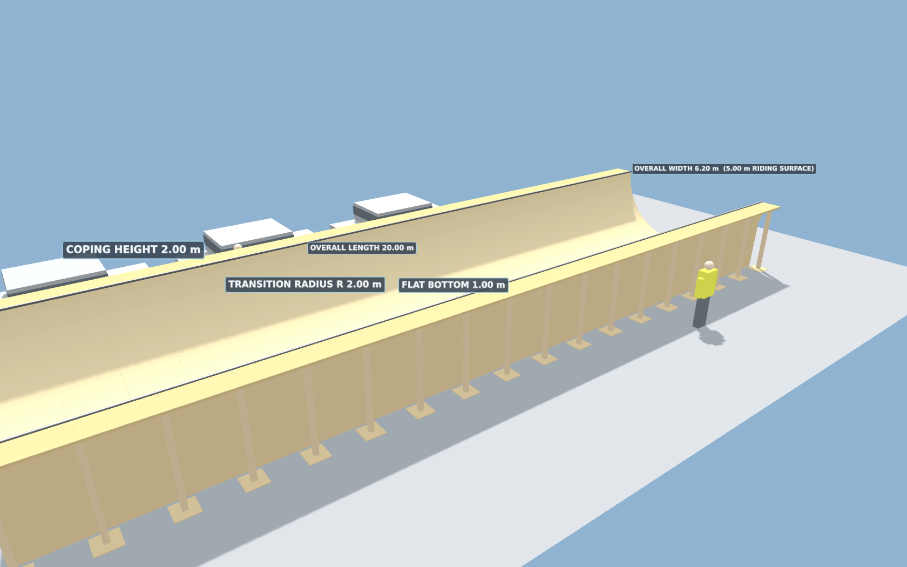

Ref TW-HP-001 | Rev P01 | 4 October 2026 | for Dal Hopwood
NOT A DESIGN — NOT FOR CONSTRUCTION — NOT A PERMIT TO LOAD OR RIDE. The wind pressure is calculated here. The structure is not designed here. The design and its independent check must be produced, checked and owned by a competent temporary works designer, and nothing is erected, ballasted or ridden until a permit to load has been issued.
Everything in this pack in a single document: the report, the drawing sheet, the wind and hold-down sheet, the priced build sheet and the builder's briefing.
The ramp as built from this geometry. On a phone, drag one finger to orbit and pinch to zoom; the frame only switch hides the ply so you see ribs, legs and bearers, which is the view a temporary works reviewer wants.
Known issue: the model opens with the camera raking along the ramp, so it does not show you the trough until you spin it round. The stills below are from angles that do read. Fix in hand.
Rendered from the actual model geometry, so the arrangement, the proportions and the frame are the design rather than an artist's impression.


